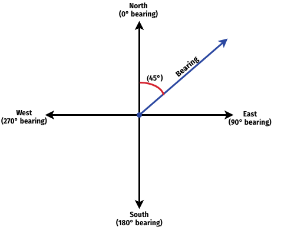
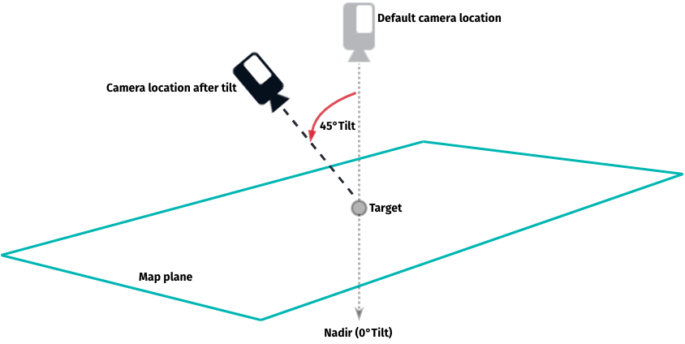
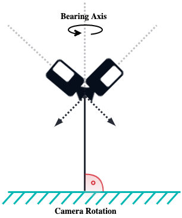

Adjust the map view
The HERE SDK offers various methods to change the map view. While map styles allow you to alter the appearance of the map, the MapCamera functionality enables you to view the map from different perspectives.
How does it work?
With the HERE SDK, you can set a target location, tilt the camera, zoom in and out, and adjust the bearing angle, among other capabilities.
- Use the
MapCamerareturned byHereMapController.camerato manipulate the view of the map. - Set a new target location by calling
camera.lookAtPoint(GeoCoordinates(52.520798, 13.409408)). This instantly switches the map view to the new location. - Get the current center location of the map view by calling
camera.state.targetCoordinates. - Zoom the map by setting a distance in meters:
_hereMapController.camera.lookAtPointWithMeasure(mapCenter, MapMeasure(MapMeasureKind.distance, distanceToEarthInMeters)). Get the current distance from the camera'sStateproperty. TheStateprovides also the current the zoom level. - Set a
GeoOrientationUpdateto specify the tilt angle and bearing angle of the camera. - Set a transform center with
MapCamera.principalPointto change the default pivot point that is centered on the map view. - Get the bounds of the currently displayed area from
camera.boundingBox. - Set the bounds of an area to display by calling
camera.lookAtAreaWithGeoOrientation(geoBox, orientation). - Move the map: Run basic animations from A to B with the
MapCameraAnimationFactory. Customize animations by using one of its overloaded methods - for example, useflyTo()for advanced animations.
By default, the camera is located centered above the map. From a bird's eye view looking straight-down, the map is oriented north up. This means that on your device, the top edge is pointing to the north of the map.
Change the camera location
If you want to move the map to a new location with an animation, use the flyTo() method of the MapCameraAnimationFactory. If you want to instantly switch to a new map location, you can do so by setting a new target:
By setting a new camera target, you can change the camera's location and effectively change the location that is shown at the center of the map view. The lookAt() method is available in different overloads. Just a few examples:
// Change only the location.
_hereMapController.camera.lookAtPoint(GeoCoordinates(52.520798, 13.409408));
// Change zoom and location.
double distanceToEarthInMeters = 1000 * 2.0;
MapMeasure mapMeasureZoom = MapMeasure(MapMeasureKind.distance, distanceToEarthInMeters);
_hereMapController.camera.lookAtPointWithMeasure(GeoCoordinates(52.530932, 13.384915), mapMeasureZoom);
// Change location area and orientation.
var southWestCorner = GeoCoordinates(52.373556, 13.114358);
var northEastCorner = GeoCoordinates(52.611022, 13.479493);
var geoBox = GeoBox(southWestCorner, northEastCorner);
var bearing; // Set null, to keep bearing unchanged.
var tilt = 45.0;
var orientation = GeoOrientationUpdate(bearing, tilt);
_hereMapController.camera.lookAtAreaWithGeoOrientation(geoBox, orientation);
Note that changing the orientation (bearing, tilt) of the camera does not change the location of the map.
Note
The HERE SDK also supports dedicated zoom levels in the range [0,22] to provide a quick way to achieve the desired level of detail. Call the camera's zoomTo(zoomLevel) method to set the zoom level and access the current zoom level from the camera's State property. Important: the zoom level is set as Double, be sure to not mix it with the distanceInMeters parameter that is also of type Double.
By changing the camera, you can only programmatically change the perspective of the map view, but you do not have direct control of the map view itself - like when performing gestures to zoom the map or to rotate or to tilt the map. See the Gestures section for an overview of the available gestures to manipulate the map directly.
Note
A MapCamera is always in a defined State. For example, the State is providing the current target location. This target location indicates the current center of the map view - unless the default principal point was changed (see below).
Alternatively, fly to a location with a concave bow animation:
void _flyTo(GeoCoordinates geoCoordinates) {
GeoCoordinatesUpdate geoCoordinatesUpdate = GeoCoordinatesUpdate.fromGeoCoordinates(geoCoordinates);
double bowFactor = 1;
MapCameraAnimation animation =
MapCameraAnimationFactory.flyTo(geoCoordinatesUpdate, bowFactor, Duration(seconds: 3));
_hereMapController.camera.startAnimation(animation);
}
Rotate the camera
With the camera, you cannot rotate the map directly, but change the camera's orientation instead. By changing the bearing parameter of the GeoOrientationUpdate, you will have the same effect as when rotating the map.
The orientation of the map is usually specified by a bearing angle. 'Bearing' is a navigational term, counted in degrees, from the North in a clockwise direction.

By default, the camera has a bearing value of 0° degrees. By setting a bearing angle of 45°, as visualized in the illustration above, the map appears to the camera's eye as it rotates counter-clockwise and the direction of the bearing becomes the new upward direction on your map, pointing to the top edge of your device. This is similar to holding and rotating a paper map while hiking in a certain direction. Apparently, it is easier to orient yourself if the map's top edge points in the direction in which you want to go. However, this will not always be the true North direction (bearing = 0°).
Note that the bearing axis is always perpendicular to the ground and passes through the camera, regardless of the current camera orientation.
The following code rotates the camera by 90°:
var bearingInDegrees = 90.0;
var tiltInDegrees = 0.0;
var orientation = GeoOrientationUpdate(bearingInDegrees, tiltInDegrees);
var target = GeoCoordinates(52.373556, 13.114358);
var distanceToEarthInMeters = 1000 * 7.0;
MapMeasure mapMeasureZoom = MapMeasure(MapMeasureKind.distance, distanceToEarthInMeters);
_hereMapController.camera.lookAtPointWithGeoOrientationAndMeasure(target, orientation, mapMeasureZoom);
Effectively, for the viewer this lets the map appear rotated by 90° to the left.
Alternatively, you can use the nullable constructor fields and set only the tilt value for the orientation like so:
var bearing = 90.0;
var defaultOrientation = GeoOrientationUpdate(bearing, null);
Then the current tilt orientation of the map will be unchanged and only the bearing can be changed.
Tilt the camera
The camera can also be used to transform the flat 2D map surface to a 3D perspective to see, for example, roads at a greater distance that may appear towards the horizon. By default, the camera is not tilted (tilt = 0°).
In addition to the tilt value of the camera, the camera's bearing angle (see above) can be manipulated. Here we show the effect of changing the tilt value. Look at the illustration below to see the available camera axes.
A tilt value of 0° means that the camera's optical axis is perpendicular to the ground. The tilt angle is always calculated from this perpendicular axis. The tilt angle relates to the optical axis of the camera.
As visualized in the illustration, tilting the camera by 45° will change the bird's eye view of the camera to a 3D perspective. Use the code below to change only the tilt value of the camera:
var bearingInDegrees = 0.0;
var tiltInDegrees = 45.0;
var orientation = GeoOrientationUpdate(bearingInDegrees, tiltInDegrees);
var target = GeoCoordinates(52.373556, 13.114358);
var distanceInMeters = 1000 * 7.0;
MapMeasure mapMeasureZoom = MapMeasure(MapMeasureKind.distance, distanceToEarthInMeters);
_hereMapController.camera.lookAtPointWithGeoOrientationAndMeasure(target, orientation, mapMeasureZoom);
Alternatively, you can use the nullable constructor fields and set only the tilt value for the orientation like so (this will keep the current or default bearing value of the map):
var tilt = 45.0;
var newOrientation = GeoOrientationUpdate(null, tilt);
As you can see in the illustration below, the tilt angle is calculated from the vertical axis at the target location. The direction pointing straight-down below the observer is called the nadir. Setting a tilt value will effectively move the camera to keep focusing the camera's target.
Note that each tilt value is applied as absolute value and not as delta - this means that subsequent tilt values will be always applied from the camera's default location and not the previous location. Therefore, setting the same tilt value multiple times, will not change the camera's tilt axis. This is common for most camera operations. Values that are out of range will be clamped.

All axes can be manipulated at the same time.
Note that changing the bearing value will give different results when the camera is tilted - as illustrated below: a tilted camera will lead to a different target location when a bearing value is set, while an untilted camera will keep its target location.

Change the transform center
By default, the map's pivot point - or principal point - is centered on the map view. It determines the point where the target coordinates are placed within the map view. Setting a new principal point instantly moves the map to render the current target coordinates at the new principal point. It is set in pixels relative to the map view's origin top-left (0, 0).
Note
The principal point affects all programmatic map transformations (rotate, orbit, tilt and zoom) and the two-finger-pan gesture to tilt the map. Other gestures, like pinch-rotate, are not affected.
Usually, you want to set the principal point only once, for example to lower the transform center a bit during turn-by-turn navigation - so the user can see more of the road ahead. To achieve this, you need to get the pixel dimensions of your map view (based on your layout and the device's screen dimensions) and then lower the height by 3/4, that is multiply mapViewHeightInPixels by 0.75. See the following example:
// Repositions principal point 3/4 lower than default.
var mapViewWidthInPixels = _hereMapController.viewportSize.width;
var mapViewHeightInPixels = _hereMapController.viewportSize.height;
Point2D newTransformCenter = Point2D(mapViewWidthInPixels / 2, mapViewHeightInPixels * 0.75);
_hereMapController.camera.principalPoint = newTransformCenter;
The code snippet above sets a new principal point that will instantly move the current map center down by 3/4 of the visible map area on screen. Once set, all further map manipulations will be pivoted around this new principal point. For example, when you programmatically rotate the map, the map will always rotate around the principal point.
More example code for this can be seen in the "camera_app" example on GitHub.
Customize gestures and camera behavior
By default, the map view supports several gestures that allow users to manipulate the camera by interacting with the map. For example, you can pinch and rotate the map using a two-finger gesture. Each gesture also adjusts the properties of the camera. If you want to customize the default behavior, you can disable any of the supported GestureType actions and define your own camera manipulation.
Add animations
More advanced animation examples can be seen in the CameraKeyframeTracks example app on GitHub.
If you are looking for an example how to zoom to a Route, or a GeoBox, take a look at the routing section. This can be done with or without an animation - including an optional padding.
Try the Camera example app
Most of the code snippets mentioned above are available in our "camera_app" example app. You can find this example app on GitHub for your preferred platform.